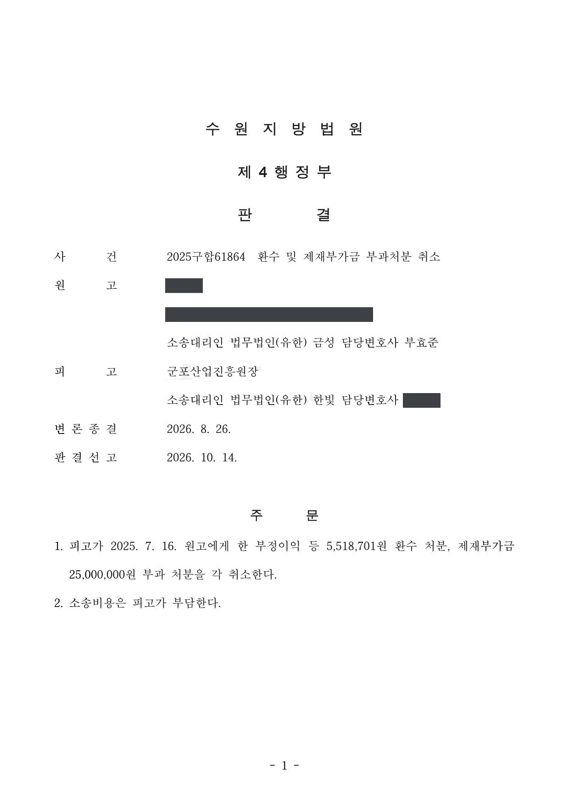

공공재정환수법상 부정이익 환수·제재부가금 부과처분 취소소송
수원지방법원 2025구합61864 · 기업 대표자(처분 상대방) 대리 · 담당변호사 부효준
판결문

사건의 요지
지방자치단체 출연기관의 창업기업 사업화 지원금을 둘러싸고 그 기관의 장이 기업 대표자 개인에게 한 「공공재정 부정청구 금지 및 부정이익 환수 등에 관한 법률」상 부정이익 환수처분과 제재부가금 부과처분을 다툰 사건입니다. 출연기관의 장이 같은 법상 처분권한을 가진 행정청에 해당하는지, 지원금을 받은 법인이 아닌 대표자 개인을 처분의 상대방으로 삼은 것이 적법한지, 지원 협약이 지방계약법의 적용을 받는 계약인지 등이 쟁점이었고, 처분권한의 부존재와 처분 상대방의 오인을 이유로 두 처분이 모두 취소되었습니다.
주제별 사례연구개발비·출연금 환수처분제재부가금 부과처분
사건의 주요 내용
지방자치단체가 조례에 따라 설립한 출연기관(재단법인)이 운영하는 창업지원센터의 입주기업이던 회사가, 2020년 그 기관의 '입주기업 맞춤형 사업화 지원' 사업에 선정되어 협약을 맺고 레저용품 시제품 제작과 홍보물 제작 비용으로 지원금 500만 원(총사업비 555만 원 중 자부담 10% 제외)을 받았습니다. 약 3년 뒤 '다른 공공기관의 지원사업으로 만든 결과물을 이 사업의 결과물인 것처럼 결과보고서를 꾸며 사업비를 편취하였다'는 익명의 신고가 접수되어 지방자치단체를 거쳐 출연기관에 전달되었고, 출연기관의 장은 2024년 3월 전문위원회를 열어 두 사업의 결과물이 겹치는지 심의하면서 회사 대표자의 소명을 들었습니다.
출연기관의 장은 2025년 7월, 지원금을 받은 회사가 아니라 그 대표자였던 원고 개인을 상대방으로 하여 「공공재정 부정청구 금지 및 부정이익 환수 등에 관한 법률」(공공재정환수법) 제8조 제1항·제9조 제1항에 따라 부정이익 500만 원과 이자 518,701원을 합한 5,518,701원의 환수처분과 부정이익의 5배인 2,500만 원의 제재부가금 부과처분을 하였습니다. 처분서에 적힌 처분사유는 '허위 청구'였습니다. 회사는 그 사이 2024년 9월 해산하여 원고가 청산인이 된 상태였고, 원고는 부효준 변호사를 소송대리인으로 하여 두 처분의 취소를 구하는 소를 제기하였습니다.
피고의 주장
- 회사가 다른 공공기관의 지원사업으로 제작한 결과물을 이 사업의 결과물인 것처럼 결과보고서를 작성하여 지원금을 받았으므로, 거짓이나 그 밖의 부정한 방법으로 공공재정지급금을 청구한 '부정청구등'(공공재정환수법 제2조 제6호 가목)에 해당한다는 것이 처분의 전제였습니다.
- 처분권한에 관하여는, 조례상 지방자치단체의 장이 출연기관에 관련 업무를 위탁할 수 있고 실제로 업무위탁에 관한 별도의 협약이 존재한다고 주장하였습니다.
- 처분 상대방에 관하여는, 공공재정환수법 업무 매뉴얼의 서식이 '성명(대표자명)'과 '생년월일(사업자등록번호 또는 법인등록번호)'을 적도록 되어 있으므로, 지급금을 받은 자가 법인이라도 그 대표자인 자연인을 처분 대상자로 특정하도록 되어 있다고 주장하였습니다.
부효준 변호사의 주장
- 처분서에 처분사유가 '허위 청구'라고만 적혀 있어 어떤 근거와 이유로 처분이 이루어졌는지 알기 어려우므로, 행정절차법 제23조 제1항의 이유 제시 의무를 위반한 절차적 하자가 있다고 주장하였습니다.
- 이 사건 협약은 지방계약법의 적용을 받는 계약이므로 공공재정환수법 제4조 제4호에 따라 같은 법이 적용되지 않고, 따라서 처분의 법적 근거가 없다고 주장하였습니다.
- 출연기관은 조례에 따라 설립된 재단법인이고 피고는 그 대표기관에 불과하여, 공공재정환수법 제2조 제2호가 정한 '행정청'(국가·지방자치단체의 기관, 또는 법령·자치법규에 따라 행정권한을 가지거나 위탁받은 공공단체 등)에 해당하지 않으므로 처분권한이 없다고 주장하였습니다.
- 지원금을 신청하여 받은 자는 회사이고 원고 개인이 아니므로 처분의 상대방을 오인한 것이며, 두 사업에서 제작한 시제품과 홍보물은 서로 다른 것이어서 처분사유도 존재하지 않는다고 주장하였습니다.
법원의 판단
법원은 절차적 하자와 법적 근거 부존재 주장은 받아들이지 않았습니다. 전문위원회에서 소명을 듣고 사전통지서에 처분의 원인 사실과 근거 조문을 적었으므로 처분의 근거와 이유를 충분히 알 수 있었다고 보았고, 공공재정환수법 제4조 제4호가 적용을 제외하는 '지방계약법의 적용을 받는 사항과 그에 준하는 계약관계'는 대가가 오고 가는 유상계약관계를 뜻하므로, 지원금을 지원하기만 하는 이 사건 협약은 거기에 해당하지 않는다고 판단하였습니다.
그러나 처분권한은 없다고 보았습니다. 공공재정환수법상 환수·제재부가금 부과 권한은 같은 법 제2조 제2호의 '행정청'에게 있는데, 출연기관은 조례에 따라 설립된 재단법인이고 피고는 그 대표기관에 불과하여 행정청이 아니며, 이 사건에서는 지방자치단체의 장이 행정청에 해당한다는 것입니다. 관련 법률과 조례 어디에도 그 권한을 출연기관이나 피고에게 위임·위탁하는 규정이 없고, 별도의 위탁 협약이 있다는 자료도 제출되지 않았다고 지적하였습니다.
처분 상대방에 관하여도, 협약을 체결하고 지원금을 받은 자는 회사이고 회사는 대표자인 원고와 별개의 법인격을 가진 권리의무 주체이며, 지원금이 원고에게 귀속되었다는 자료가 없고, 부정수익자가 법인인 경우 그 대표자인 자연인에게 처분을 할 법적 근거가 보이지 않는다고 하여 상대방을 오인한 잘못을 인정하였습니다. 법원은 이 두 가지 잘못만으로 처분이 위법하다고 보아 처분사유 부존재 주장은 더 살피지 않고, 환수처분과 제재부가금 부과처분을 모두 취소하였습니다.
이 사건 각 처분의 근거규정인 공공재정환수법 제8조 제1항, 제9조 제1항은, ‘행정청은 부정청구등이 있는 경우에는 부정이익등 환수하고 제재부가금을 부과ㆍ징수하여야 한다’고 규정하고 있다. 즉, 공공재정환수법이 정한 부정이익 환수 처분, 제재부가금 부과 처분을 할 수 있는 권한을 가진 주체는 같은 법 제2조 제2호에서 정한 행정청이다.
원고가 지적하고 있는 바와 같이, 출연기관은 이 사건 조례에 따라 설립된 재단법인이고, 피고는 그 대표기관에 불과하다. 출연기관과 피고는 행정에 관한 의사를 결정하여 표시하는 국가 또는 지방자치단체의 기관이 아니고, 이 사건의 경우 지방자치단체의 장이 공공재정환수법 제2조 제2호에서 정한 행정청에 해당한다.
수원지방법원 2025구합61864 판결 이유 '3. 다. 처분권한 부존재 주장에 관한 판단'
이 사건 협약을 체결하고 이 사건 지원금을 신청하여 받은 자는 이 사건 회사이지 원고가 아니다. 설령 원고가 이 사건 회사의 대표자로 재직하였다고 하더라도 이 사건 회사는 자연인인 원고와는 별개의 법인격을 가진 권리의무 주체이다. 이 사건 지원금이 원고에게 귀속되었다고 볼 만한 아무런 자료가 제출되지도 않았다.
(중략)
서식이 위와 같이 기재되어 있다고 하더라도 이 사건 회사가 아닌 원고가 부정수익자에 해당한다고 볼 만한 자료가 없는 점, 위 서식에서 성명란에 대표자명을 기재하게 되었다고 하더라도 이는 법인을 특정하기 위하여 방편으로서 부가적 기재사항에 해당할 수 있는 점, 달리 부정수익자가 법인인 경우 그 법인의 대표기관인 자연인에게 부정이익의 환수 처분 및 제재부가금 부과 처분을 할 수 있는 법적근거가 보이지 않는 점 등을 고려할 때, 피고의 이 부분 주장을 받아들이기 어렵다.
수원지방법원 2025구합61864 판결 이유 '3. 라. 처분의 상대방 오인 주장에 관한 판단'
이상의 규정을 종합적으로 보았을 때, 공공재정환수법 제4조 제4호에서 말하는 ‘지방계약법의 적용을 받는 사항과 그에 준하는 계약관계에 해당하는 사항’은 ‘대가가 오고가는 계약(유상계약)관계에 해당하는 사항’으로 해석하는 것이 체계적으로 타당하다.
이 사건 지원금을 지급하면서 이 사건 회사와 출연기관 사이에 협약서가 작성되어 있기는 하다. 그러나 이 사건 사업은 출연기관의 창업지원센터 입주기업으로 하여금 안정적으로 성장기반을 마련하고 기업 경쟁력 제고를 돕고자 출연기관이 입주기업의 사업비를 지원하는 것을 그 목적으로 하는 사업이고, 피고는 이 사건 회사의 사업을 효율적으로 운영ㆍ지원하고자 하는 차원에서 이 사건 협약을 체결한 것이다. 협약서가 작성되었다는 것이 곧 이 사건 협약이 지방계약법에 준하는 계약관계를 의미한다고 볼 것은 아니다.
수원지방법원 2025구합61864 판결 이유 '3. 나. 법적근거의 부존재 주장에 관한 판단'
※ 판결 이유 가운데 이 사건의 판단 기준이 된 부분을 그대로 옮긴 것으로, 당사자 이름 등은 가렸습니다.
이 사건이 보여 주는 것
공공재정환수법에 따른 부정이익 환수와 제재부가금 부과는 같은 법이 정한 '행정청'만 할 수 있습니다. 지방자치단체가 설립한 출연기관이 지원금을 직접 집행하였더라도 법령이나 자치법규로 그 권한을 위임·위탁받지 않았다면 기관이나 기관의 장 명의로 처분할 수 없고, 지방자치단체의 장이 처분 주체가 되어야 한다는 점을 이 판결은 분명히 하였습니다. 출연기관·지원기관의 장 명의로 환수 통지를 받았다면 처분권한부터 따져 볼 필요가 있습니다.
또한 지원금을 받은 주체가 법인이면 처분의 상대방도 법인이어야 하고, 업무 매뉴얼 서식에 대표자의 이름을 적도록 되어 있다는 사정만으로 대표자 개인에게 처분할 수는 없습니다. 반대로 지원 협약서가 작성되어 있다는 것만으로 공공재정환수법의 적용이 배제되는 지방계약법상 계약관계가 되는 것은 아니라는 점도 함께 판단되었습니다.
관련 법령공공재정 부정청구 금지 및 부정이익 환수 등에 관한 법률 제2조 제2호·제5호·제6호·제7호·제8호, 제4조 제4호, 제8조 제1항, 제9조 제1항 · 공공재정 부정청구 금지 및 부정이익 환수 등에 관한 법률 시행령 제2조 · 지방자치단체를 당사자로 하는 계약에 관한 법률 제2조 · 지방자치단체 출자·출연 기관의 운영에 관한 법률 · 지방자치단체 출연기관 설립·운영 조례 제15조(업무의 위탁) · 행정절차법 제23조 제1항
관련 단어공공재정환수법부정이익 환수제재부가금처분권한행정청지방자치단체 출연기관처분 상대방 오인법인격창업기업 사업화 지원금지방계약법 적용 제외유상계약취소 인용
비슷한 처분을 받으셨다면
행정처분은 처분이 있음을 안 날부터 90일 이내에 행정심판이나 취소소송으로 다투어야 하고, 기간이 지나면 돌이킬 수 없는 처분은 집행정지를 서둘러야 합니다. 처분서를 받은 날짜부터 확인해 드립니다.